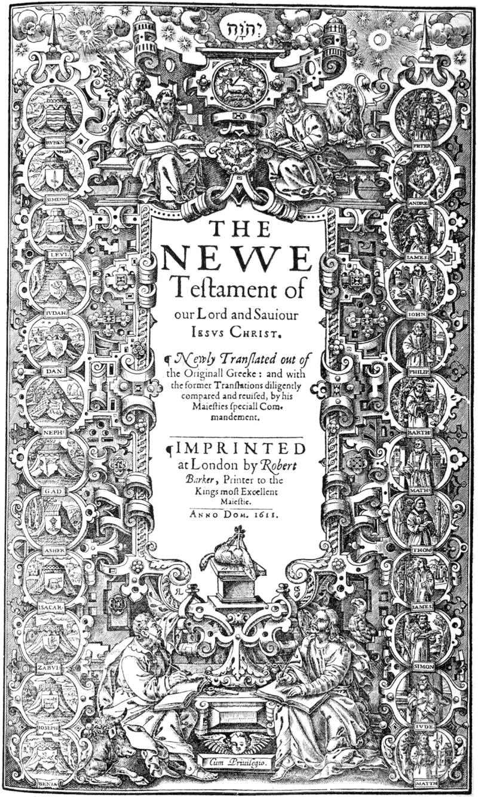

3,400 verses corrected, in a Bible never adopted
ContestedLDS scholars have a real answer here. Say so before your friend does.
What Joseph Smith did
From June 1830 to July 1833 he produced an inspired revision of the whole Bible. He altered roughly 3,400 verses, with no manuscript support for the changes.
Then he declared it done. History of the Church, 2 July 1833: "We this day finished the translating of the Scriptures."
What the revelations said
D&C 73:4 commanded the work be finished. D&C 124:89 commanded that it be published.
What the church did with it
Never adopted it. The official Bible is still the King James Version, with a few readings in footnotes and an appendix.
The rival RLDS church, now Community of Christ, published the full text in 1867, as the Inspired Version. It held the manuscripts for 150 years.
The church bought them in March 2024, with the marked Bible and the Kirtland Temple, in a deal worth $192.5 million.
A stranger detail
BYU's own scholars grant that the 1830 Book of Mormon was used as a source for some of the changes to Isaiah. Yet many Book of Mormon readings never made it into the revision, and some were changed again.
So he revised verses that his own earlier scripture quotes in the King James form.
Their answer, at full strength
FAIR and BYU scholars say the 1833 statement marked the end of a first pass, not a finished book. Joseph kept revising until 1844, and never prepared a manuscript for the press.
The command in D&C 124:89 went unfulfilled amid poverty and persecution, so the church inherited a working draft. They add that the revision was never meant as a uniform restoration of lost text; it blends restoration, prophetic comment, harmonising and modernising.
That explains the differences. And hundreds of its readings went into the footnotes and appendix of the 1979 edition, while the 2024 purchase shows reverence rather than embarrassment.
What to say
"If God had him correct the Bible, why does your church still hand out the uncorrected one?"



How they answer this — at its strongest
It was a first pass, never finished, and hundreds of readings are in the footnotes.
FAIR and BYU scholars respond that the July 1833 statement marked the end of a first pass. It was not a finished book. Joseph kept revising until his death in 1844, and never prepared a manuscript for the press.
The order to publish, at D&C 124:89, went unmet amid poverty and persecution. So the church inherited a working draft, not a finished Bible.
They add that the revision was never meant as one uniform restoring of lost words. It blends restoring, prophetic comment, harmonising and modernising. That explains the gaps against Book of Mormon readings.
And far from hiding it, the church put hundreds of its readings in the footnotes and appendix of its 1979 edition. The 2024 purchase shows reverence, not shame.
The verdict
Arguable, but his own record says he finished it in 1833.
The core facts are undisputed. The revision was commanded. It was pronounced finished in Joseph's own record in 1833. It was commanded to be published in 1841. It was never canonised. And it was published instead by the rival denomination that rejected Brigham Young.
Their reply, that it was actually unfinished and mixed in genre, is a genuine scholarly position. Joseph did keep tinkering. That keeps this contested rather than unrefuted.
But the defence sits awkwardly with the sources. It must read 'we this day finished the translating of the Scriptures' as not meaning finished. And it concedes that the revelation commanding publication was never obeyed.
The category problem stays on any reading. A prophet corrected the Bible by revelation, and the church claiming his mantle still hands members the uncorrected King James.
Sources
- BYU Studies — 'The Joseph Smith Translation of the Bible' (Robert J. Matthews)
- Church History Topics — 'Joseph Smith Translation of the Bible'
- Deseret News — 'What the LDS Church received from Community of Christ' (March 2024)
- Church Newsroom — FAQ on the transfer of sacred sites and historic documents (2024)
- Mormonism Research Ministry (evangelical) — 'The Inspired Version: Why Isn't It Officially Used Today?'